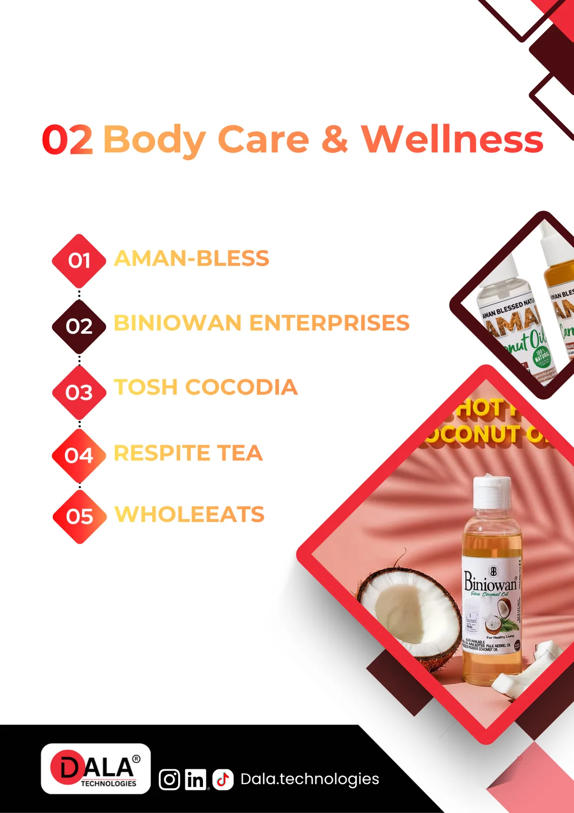
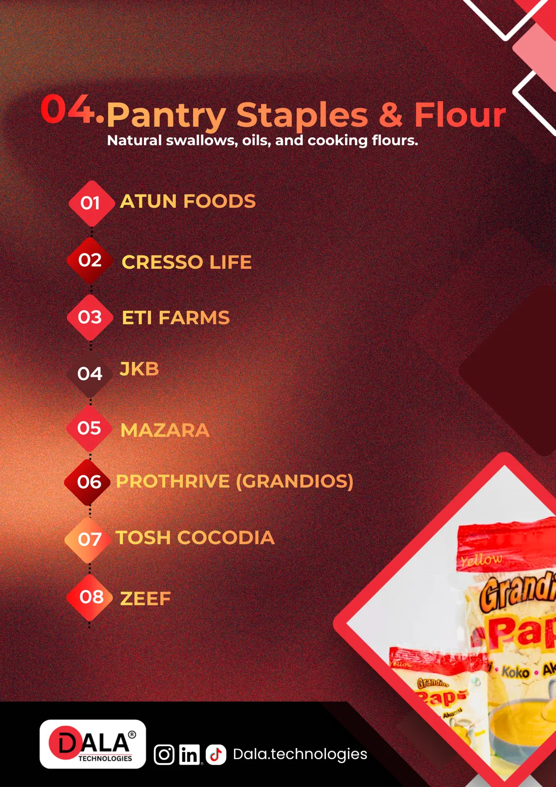
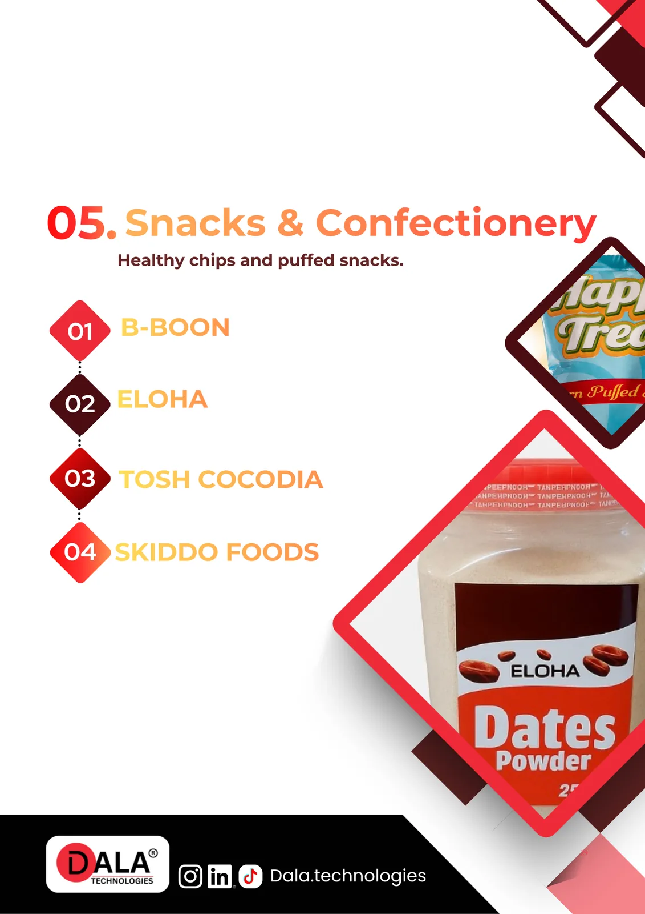
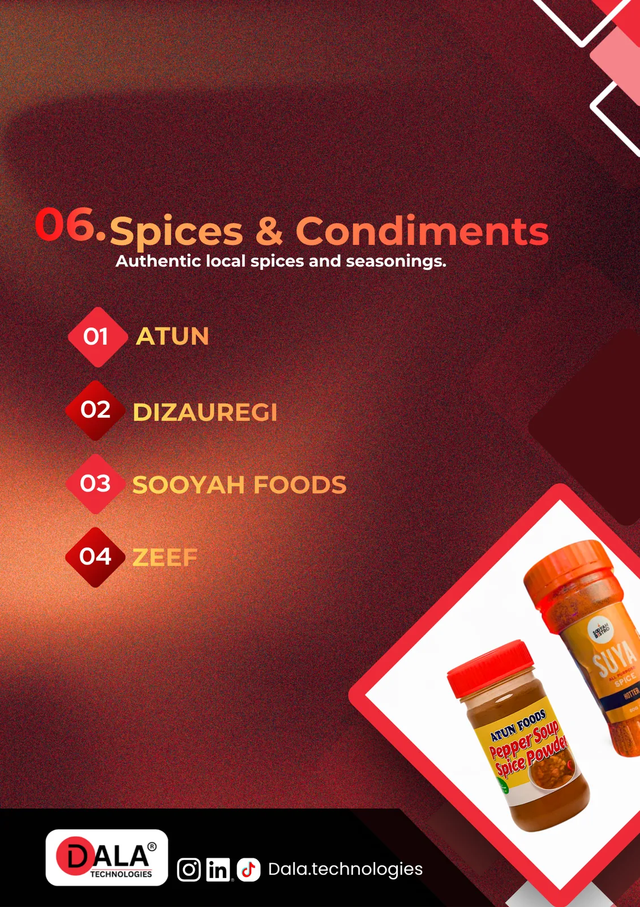
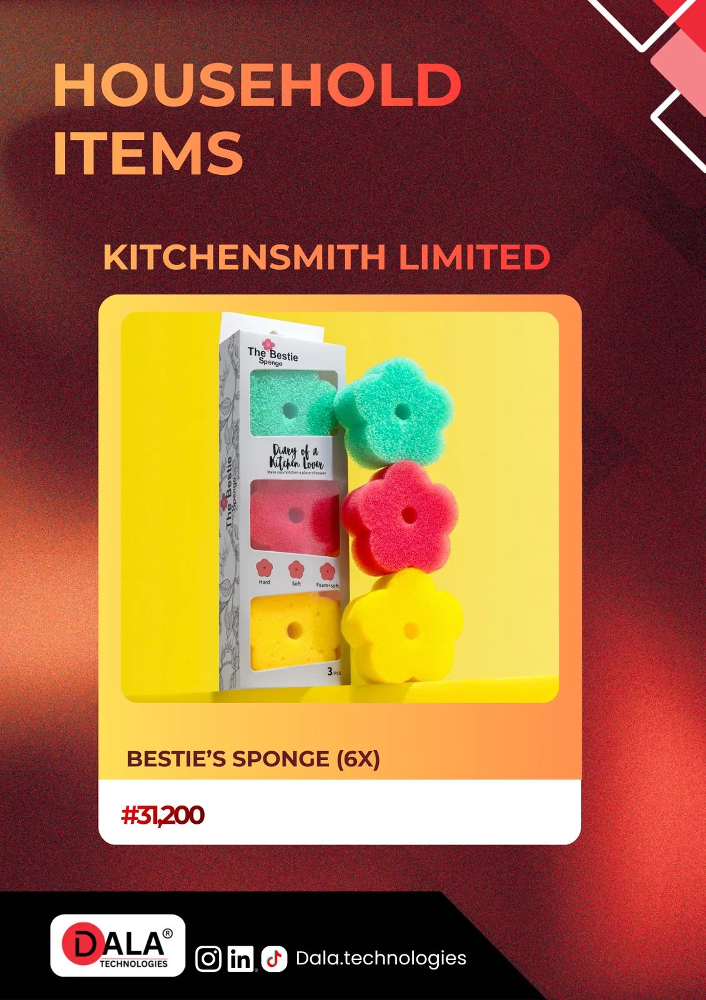

Shop the DALA product range.
Everyday essentials, shelf-ready categories, and curated product lines brought together in one premium storefront.
Explore drinks, pantry staples, snacks, infant care, spices, body care, and household products through a cleaner, more visual shopping experience.

Retail-ready collections designed for shelves, homes, and everyday use across the categories buyers ask for most.
Start with the shelf categories that matter most.
Browse the DALA range the way a storefront should feel: visually, by collection, and with each category given room to stand on its own.
Drinks & Yoghurt
Juices, milk drinks, yoghurt lines, and beverage-led products arranged as a clean collection to browse first.

Collection 02Body Care & Wellness
Personal care and wellness products presented as a premium collection with a calmer, easier retail browse.
Infant & Child Care
Early-life essentials gathered into one focused category for faster, more confident browsing.

Collection 04Pantry Staples & Flour
Shelf-ready staples, flour products, and everyday pantry essentials gathered into the broadest collection on the page.

Collection 05Snacks & Confectionery
Snack and confectionery products grouped into a collection that feels closer to a retail shelf than a document spread.

Collection 06Spices & Condiments
Seasonings, condiments, and kitchen flavor lines surfaced as one polished collection.

Collection 07Household Items
Practical home-use products collected into one clean, easy-to-browse household range.
The full catalog is still here when you want the deeper browse.
Start with collections, move with intent, and drop into the full spreads below whenever you want the complete range in one place.
Browse every catalog spread below.
When you want the complete range in one place, the full catalog spreads are all here below.
Drinks & Yoghurt
A beverage-led collection with juices, milk drinks, and yoghurt lines presented as full catalog spreads.
Body Care & Wellness
Personal care and wellness products collected into one section for a calmer, fuller browse.
Infant & Child Care
A compact category for early-life essentials, gathered into one easy-to-review section.
Pantry Staples & Flour
The broadest pantry category in the catalog, with staple products and flour lines collected into one section.
Snacks & Confectionery
Snack and confectionery products grouped into one section for a fuller category browse.
Spices & Condiments
Seasonings, condiments, and kitchen flavor lines surfaced in a dedicated section.
Household Items
The household range closes the catalog with practical home-use products in one final section.